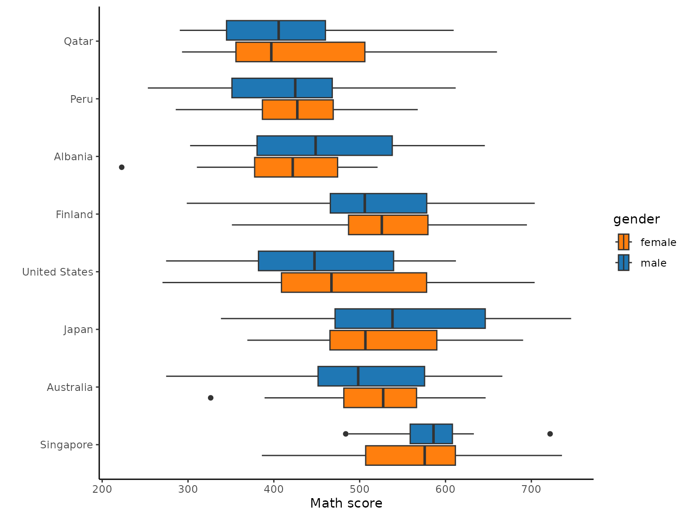
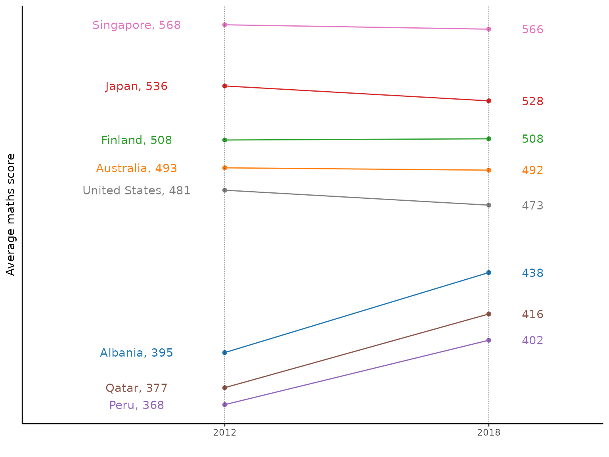

vignettes/learningtower_student.Rmd
learningtower_student.RmdThe goal of learningtower is to provide a user-friendly access to a subset of variables from the Programme for International Student Assessment (PISA) data collected by the OECD. The data is collected on a three year basis, between the years 2000-2018.
You can explore more on this dataset for various analysis and statistical computations.
This vignette documents how to access these dataset, and shows a few typical methods to explore the data.
In learningtower, the main data is the student data. This data contains information regarding student test scores and some selected variables regarding their schooling and socio-economic status. The original and complete data may be obtained from OECD.
However, the size of the full student is too big to fit inside the package. Hence, in our package, we provide a random subset of the student data, stored as student_subset_20xx data objects (where xx denotes the specific year of the study). These subset data can be used to understanding the data structure before using the full dataset which is available for download.
The student subset data is constructed by randomly sampling from the full student data. For each year and each country, we randomly sample approximately 50 observations.
The complete student dataset is available for download and can be loaded using the load_student() function included in this package.
Below is a quick example of loading the 2018 subset student data.
library(tidyverse)
library(learningtower)
#load the subset student data for the year 2018
data(student_subset_2018)
#load the countrycode data
data(countrycode)
glimpse(student_subset_2018)
#> Rows: 4,000
#> Columns: 22
#> Groups: country [80]
#> $ year <fct> 2018, 2018, 2018, 2018, 2018, 2018, 2018, 2018, 2018, 2018…
#> $ country <fct> ALB, ALB, ALB, ALB, ALB, ALB, ALB, ALB, ALB, ALB, ALB, ALB…
#> $ school_id <fct> 800059, 800084, 800093, 800278, 800055, 800279, 800029, 80…
#> $ student_id <fct> 805376, 802061, 800674, 803561, 801356, 804382, 802763, 80…
#> $ mother_educ <fct> "ISCED 3A", "ISCED 3A", "ISCED 3A", "ISCED 2", "ISCED 3A",…
#> $ father_educ <fct> "ISCED 3A", "ISCED 3B, C", "ISCED 2", "ISCED 2", "ISCED 2"…
#> $ gender <fct> male, female, male, male, female, male, female, female, fe…
#> $ computer <fct> yes, yes, yes, yes, NA, yes, yes, yes, yes, yes, yes, no, …
#> $ internet <fct> yes, no, yes, yes, NA, yes, yes, yes, yes, yes, yes, no, n…
#> $ math <dbl> 429.666, 435.103, 372.294, 473.772, 441.331, 402.099, 368.…
#> $ read <dbl> 347.710, 427.958, 271.743, 336.271, 408.466, 402.166, 350.…
#> $ science <dbl> 273.827, 460.357, 337.150, 368.131, 418.960, 322.163, 342.…
#> $ stu_wgt <dbl> 9.30357, 3.45567, 3.80952, 1.54402, 2.91673, 3.54291, 6.64…
#> $ desk <fct> yes, yes, yes, yes, yes, yes, yes, yes, yes, yes, yes, yes…
#> $ room <fct> yes, no, yes, yes, yes, yes, yes, yes, yes, yes, yes, yes,…
#> $ dishwasher <fct> NA, NA, NA, NA, NA, NA, NA, NA, NA, NA, NA, NA, NA, NA, NA…
#> $ television <fct> 2, 2, 2, 2, 2, 3+, 1, 2, 2, 1, 3+, 1, 1, 2, 1, 2, 2, 3+, 1…
#> $ computer_n <fct> 3+, 1, 1, 1, 0, 1, 1, 2, 1, 1, 3+, 0, 0, 2, 1, 1, 1, 2, 1,…
#> $ car <fct> 2, 0, 1, 3+, NA, 3+, 1, 1, 1, 0, 2, 0, 2, 1, 1, 1, 1, 1, 1…
#> $ book <fct> 11-25, 11-25, 11-25, 26-100, 0-10, more than 500, 26-100, …
#> $ wealth <dbl> 1.2825, -2.4364, -1.1034, -0.5200, -2.9037, -0.1675, -0.96…
#> $ escs <dbl> 0.7018, 0.2091, -1.1074, -0.4944, -1.9712, -0.1840, -0.602…
student_subset_2018 %>%
group_by(country, gender) %>%
dplyr::filter(country %in% c("AUS", "QAT", "USA" , "JPN",
"ALB", "PER", "FIN", "SGP")) %>%
dplyr::left_join(countrycode, by = "country") %>%
dplyr::mutate(country_name = factor(
country_name,
levels = c("Singapore", "Australia", "Japan",
"United States", "Finland", "Albania", "Peru", "Qatar"))) %>%
ggplot(aes(x = math,
y = country_name,
fill = gender)) +
geom_boxplot() +
scale_fill_manual(values = c("#FF7F0EFF", "#1F77B4FF")) +
theme_classic() +
labs(x = "Math score",
y = "")
In the figure above, we see that from the student subset data for the year 2018, in the countries like Singapore and Australia boys perform better as compared to the girls. However, in countries such as Finland, Qatar and Japan, girls perform better than the boys or are on the same level with boys when it comes to their average mathematics scores.
Furthermore, if we want to learn more about the trend in each year of the selected countries or know more about the yearly student scores, the complete student data can be retrieved for that/those years or all years using the load_student() function included in this package.
#load the entire student data for the year 2018
student_data_2018 <- load_student(2018)
#load the entire student data for two/three years (2000, 2012, 2018)
student_data_2012_2018 <- load_student(c(2012, 2018))
student_data_2000_2012_2018 <- load_student(c(2000, 2012, 2018))
#load the entire student
student_data_all <- load_student("all")
The figure above assists us in deducing the score change in the different countries from the year 2012 to 2018. This figure enables us to deduce that Albania, Qatar, and Peru have significantly boosted their average mathematics score between these years. While we also observe drop in average mathematics score for Japan.
Similarly, you may import student data for any chosen year and experiment with the PISA scores or additional analysis of these datasets with their other variables that assist contributor comprehend the data. Refer to our articles here for additional interesting analyses and plots.